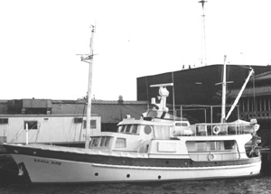

|  copyright - WHOI |
|
The wooden motor vessel Eagle Mar was donated to WHOI by Mr.
And Mrs. Edward W. Scripps II. Mr. Scripps was the chairman of the Board
of Scripps League Newspapers and grandson of the man who endowed Scripps
Institution for Biological Research, now Scripps Institution of Oceanography.
The vessel was used for several research projects, then sold in 1993.